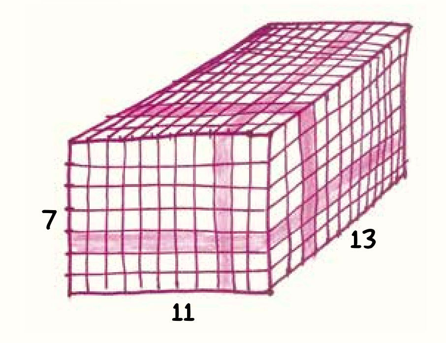

唉，这将是一个短暂而暗淡的篇章。为此我得先道个歉，但我要道歉的事太多了，比如常常在数学教育中让学生感到灵魂的煎熬。
你一定懂我的意思，对许多学生来说，“做数学题”意味着按指定顺序执行的铅笔动作。数学符号没有象征意义，它们只是在作业本上令人费解地群魔乱舞。数学就是算盘讲的故事，充满了毫无意义的“sin”和“θ”。
现在，请允许我用简短的篇幅为两件事道歉。
首先，要向我的学生说声“抱歉”：对不起，我曾让你们觉得数学这么可怕。我尝试过改变，但似乎无济于事。当然，我也曾经试过要回复每一封电子邮件，试过要戒掉冰激凌，也试过避免四个月才剪一次头发。但我认为自己无罪，抗辩理由是“人非圣贤”。
接下来，我还要向数学道歉：对不起，你在我的手中遭受了不少攻击。当然，我可以为自己辩解，因为你是一座无形的、由抽象逻辑连接的数量概念之塔，所以你身上大概不会留下什么持久的伤痕。但我没那么自大，我还是得向你说一声“对不起”。
这一章就到这里了。我保证下一章会有更多有意思的干货。
数学家眼中的“7×11×13”……
